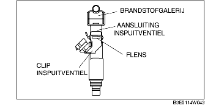

VERWIJDEREN/PLAATSEN INSPUITVENTIELEN [ZJ, Z6]
B3E011413250W02
1. Neem de voorzorgsmaatregelen in acht bij het uitvoeren van de werkzaamheden en voorkom dat er brandstof wordt gemorst. (Zie PROCEDURE VOOR REPARATIE [ZJ, Z6, LF].)
2. Verwijder de accukap. (Zie VERWIJDEREN/PLAATSEN ACCU [ZJ, Z6].)
3. Neem de minkabel van de accu los.
4. Voer de volgende procedure uit zodat u er gemakkelijker bijkunt.
Europa (LHD)
-
1. Verwijder het luchtfilter. (Zie VERWIJDEREN/PLAATSEN LUCHTINLAATSYSTEEM [ZJ, Z6].)
GB
-
1. Plaats het luchtdeksel ergens waar het niet in de weg zit. (Zie VERWIJDEREN/PLAATSEN LUCHTINLAATSYSTEEM [ZJ, Z6].)
-
2. Verwijder het luchtfilterhuis.
5. Neem de stekker van het inspuitventiel los.
6. Verwijder de onderdelen in de aangegeven volgorde, zie de tabel.
.
|
1
|
Snelkoppeling
|
|
2
|
Brandstofgalerij
|
|
3
|
Clip inspuitventiel
|
|
4
|
Inspuitventiel
|
|
5
|
Hitteschild
|
7. Plaats de onderdelen in omgekeerde volgorde.
8. Controleer alle onderdelen aan de hand van de CONTROLE NA REPARATIE. (Zie PROCEDURE NA REPARATIE [ZJ, Z6, LF].)
Aanwijzing voor verwijderen - clip inspuitventiel [ZJ, Z6]
-
Opmerking
-
• Als de flens van de aansluiting van het inspuitventiel of het gecoate deel van de brandstofgalerij is beschadigd, kan er brandstoflekkage ontstaan. Verwijder de clip van het inspuitventiel voorzichtig, om beschadiging te voorkomen.

-
• Het gebruik van een vervormde clip kan ertoe leiden dat het inspuitventiel niet correct wordt aangesloten, waardoor brandstoflekkage kan ontstaan. Vervang na het verwijderen de clip van het inspuitventiel.
1. Neem een zijde van de clip los van de flens van de aansluiting van het inspuitventiel.
2. Houd de losgemaakte zijde van de clip vast zodat deze niet gaat schuiven, en maak de andere zijde van de clip los.
3. Verwijder de clip door deze in axiale richting van het inspuitventiel te schuiven.
Aanwijzing voor plaatsen - inspuitventiel [ZJ, Z6]
1. Breng een geringe hoeveelheid schone olie aan op een nieuwe O-ring.
-
Opmerking
-
• Een beschadigde O-ring kan brandstoflekkage tot gevolg hebben. Let op dat u de O-ring niet beschadigt bij het plaatsen van het inspuitventiel.
-
• Verontreinigingen op de verbinding tussen het inspuitventiel en de brandstofgalerij kunnen beschadiging van deze onderdelen tot gevolg hebben. Reinig, om dit te voorkomen, de verbinding voordat het inspuitventiel wordt aangesloten.
2. Plaats het inspuitventiel recht in de aansluiting.
3. Controleer of het inspuitventiel soepel ronddraait.
-
• Plaats het inspuitventiel opnieuw als het niet soepel ronddraait.
Aanwijzing voor plaatsen - clip inspuitventiel [ZJ, Z6]
1. Plaats een nieuwe clip op het inspuitventiel en plaats het ondersteunende gedeelte volledig in het onderste deel van de stekker.
2. Schuif de clip recht op het inspuitventiel tot hij vastklikt.
3. Controleer of de flens volledig in de groef zit.